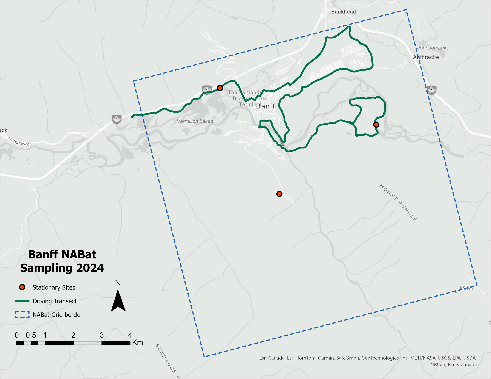
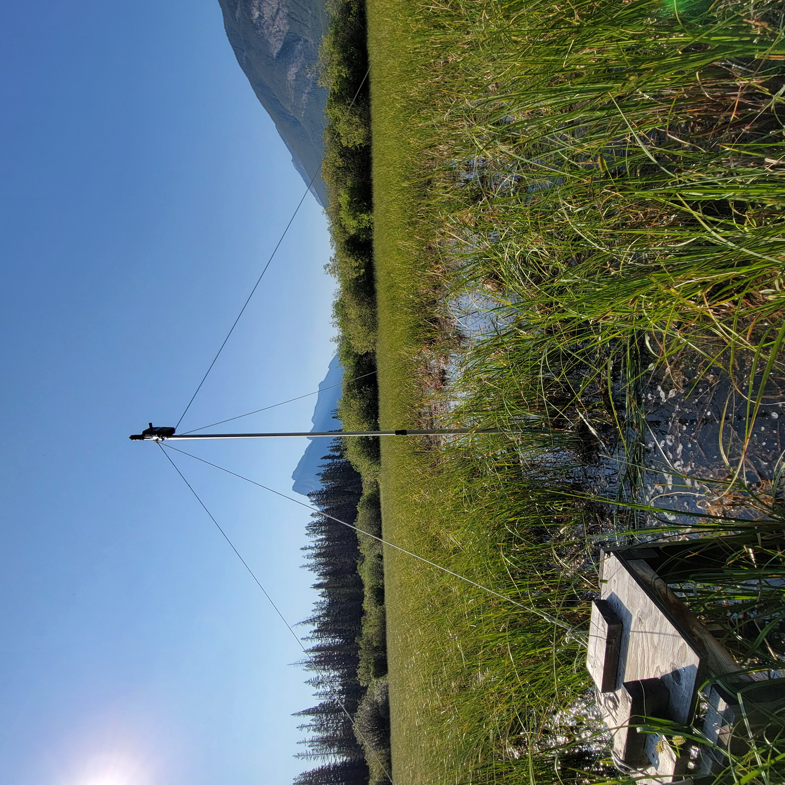
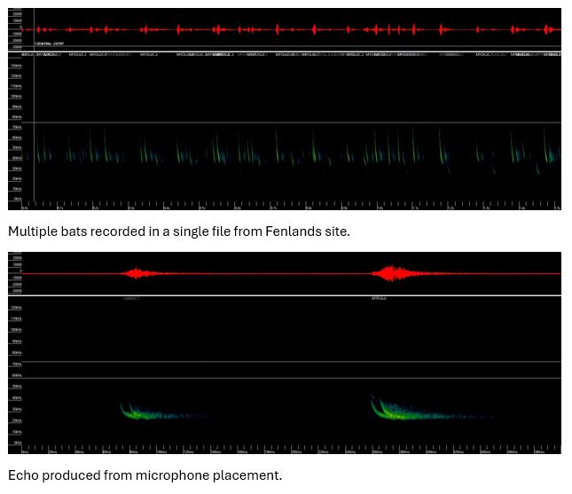

| Manual ID | BANFF-MOBILE | FENLANDS | GOLF-COURSE | UPPER-HOTSPRINGS | Total |
|---|---|---|---|---|---|
| EPFU | 1 | 19 | 10 | 2 | 32 |
| LABO | 0 | 14 | 10 | 0 | 24 |
| LACI | 0 | 10 | 3 | 2 | 15 |
| LANO | 1 | 23 | 5 | 3 | 32 |
| MYEV | 0 | 8 | 5 | 3 | 16 |
| MYLU | 2 | 69 | 27 | 3 | 101 |
| MYVO | 0 | 11 | 8 | 0 | 19 |
| EPFULANO | 7 | 99 | 14 | 2 | 122 |
| LABOMYLU | 3 | 110 | 40 | 4 | 157 |
| MYLUMYVO | 1 | 23 | 16 | 0 | 40 |
| MYOTIS | 0 | 0 | 8 | 2 | 10 |
| HIF | 13 | 260 | 130 | 7 | 410 |
| LOF | 4 | 100 | 10 | 0 | 114 |
| NOID | 2 | 3 | 1 | 0 | 6 |
| NOISE | 164 | 2 | 0 | 0 | 166 |
| 40KMYO | 5 | 80 | 64 | 0 | 149 |
| TOTAL | 39 | 829 | 351 | 28 | 1247 |
Executive Summary
Banff National Park conducts annual acoustic monitoring of bats as part of the North American Bat Monitoring Program (NABat). In 2024, the monitoring consisted of 3 stationary acoustic deployments operating between June-26 and July-09, and 2 mobile transects conducted on the nights of June-30and July-01. These data were submitted SENSR for processing and manual vetting. The processing focused on seven bat species known to inhabit the region.
In total 3 stationary detectors operated for a total of 42 recorder nights and in total collected 15129files. Of these, 894 were manually reviewed and vetted. Mobile transect surveys collected 529 files, of which 337were identified as noise by the auto id softwares and were not all manually vetted. The species most recorded and identified was Little Brown Bats (Myotis lucifugus) with a total of101 recordings manually verified.
Key recommendations for the future include modifying the mobile transect route to prevent switchbacks, which compromises abundance measurements, and adjusting the Golf Course and Fenlands sites to be 5-10m away from open water to prevent multiple bats in a single recording.
Land Acknowledgement
Biodiversity Pathways respectfully acknowledges that this work takes place on the territories of Treaties 6, 7, 8, and the Métis homeland, traditional and ancestral lands of First Nations and Métis Peoples, whose histories, languages, and cultures are directly linked to the biodiversity that we monitor.
We acknowledge the traditional teachings of the lands that we work on, and that reciprocal, meaningful, and respectful relationships with Indigenous peoples make our work possible. We are deeply grateful for their stewardship of these lands, and we are committed to supporting Indigenous-led monitoring programs, while learning Indigenous ways of knowing, being, and doing.
Introduction
Overview of NABat and the NNW Bat Hub
The North American Bat Monitoring Program (NABat) is a large-scale coordinated effort to monitor bat species across North America using standardized protocols and a unified sample design (Loeb et al. 2015). NABat was established to address the gaps in knowledge and lack of long-term studies of bat species across Mexico, USA, and Canada. The program is administered by the US Geological Survey (USGS), coordinated by the Canadian Wildlife Health Cooperative (CWHC) in Canada, and implemented by the North by Northwest Bat (NNW) Hub in British Columbia, Alberta, and S.E. Alaska.
As part of contributing to the NABat program, Banff National Park has monitored one sampling cell (GRTSID: 148842) within the park since 2020. This monitoring has occurred using three stationary acoustic detectors and a driving transect.
2024 NABat Monitoring in Banff National Park
In the field season of 2024, 3separate stationary bat acoustic deployments and 2 mobile transects were made in Banff National Park (Figure 1). The stationary monitoring recorders collected data between June-26 and July-09 , mobile transects were made on the nights of June-30and July-01 . The recordings were submitted to SENSR for processing and manual vetting to determine species presence or absence at the sites.

Methods
Full-spectrum recordings from the sampling periods were collected and processed using two automatic classifiers: Kaleidoscope’s Bats of North America 5.4.0 classifier and Sonobat 3.0’s Northwestern British Columbia classifier. Based on documented species ranges and prior detection data (Olson n.d.), manual identification efforts focused on seven species: Big Brown Bats (Eptesicus fuscus), Eastern Red Bats (Lasiurus borealis), Silver-haired Bats (Lasionycteris noctivagans), Hoary Bat (Lasiurus cinereus), Little Brown Bats (Myotis lucifugus), Long-legged Myotis (Myotis volans) and Long-eared Myotis (Myotis evotis).
The analysis workflow followed processing standards established by the North American Bat Monitoring Program (NABat) (Reichert et al. 2018). Only recordings that received automated species classifications from either Kaleidoscope or Sonobat were selected for manual verification. For stationary acoustic monitoring sites, recordings were manually vetted until at least one recording per species per site per night was confidently identified. For mobile transects, all recordings with automated classifications underwent complete manual verification. Species identifications were validated using reference call parameters described by Szewczak (2018), Slough et al. (2022), and Solick (2022), in accordance with NABat manual vetting protocols.
Results
The stationary detectors ran for a total of 42 recorder nights and in total collected 15129 files. Of these, 1054 were classified as noise files, with no distinguishable bat present. Of the remaining files, a total of 894 were reviewed and manually vetted, following the minimum standards set by NABat to manually verify recordings until at least one recording per species per site per night was confidently identified (Reichert et al. 2018). The manual ID codes used for species identification follow standard NABat conventions and are detailed in Appendix A.
For driving transects, a total of 529 files were collected, of which 337 were noise files. All files that were not classified as noise were manually verified for the mobile transects.
The most recorded and identified species was Little Brown Bat (Myotis lucifugus) with a total of 101 recordings identified, followed by Silver-haired Bats (Lasionycteris noctivagans) and Big Brown Bat (Eptesicus fuscus) both of which had a total of 32 recordings identified across the sites and transects (Table 1).
Recommendations
Equipment set up
The current setup has microphones attached directly to the detector (Figure 2). This creates a flat surface that bounces sound back into the microphone, producing echoes in the recordings (Figure 3). These echoes reduce recording quality and complicate both automated and manual identification of bat calls. We recommend getting an extension cord so that the microphone can be mounted at the top of the bat pole by itself, while the recorder is at the base. This will reduce the amount of echo recorded improving recording quality.

Site Placement
There was a high number of files with multiple bats recorded in the Golf Course and Fenlands sites (Figure 3). This is likely due to the proximity to the water at both sites. We recommend moving these sites 5-10m away from open water to minimize the occurrence of multiple bats in single recordings. This change will make species identification more reliable.

Route Design for Transects
The current route contains sections that curve back on themselves (Figure 1). Switchbacks in the route undermines the accuracy of abundance measurements by potentially recording the same bats multiple times. We recommend updating the route to minimize the number of switchbacks, even if this requires the route to go outside of the grid cell being sampled.
Appendix A
Definitions for manual identification used while processing Banff National Park bat bioacoustic data
| Manual ID | Definition |
|---|---|
| EPFU | Calls that have diagnostic features identifying it as Eptesicus fuscus |
| LABO | Calls that have diagnostic features identifying it as Lasiurus borealis |
| LACI | Calls that have diagnostic features identifying it as Lasiurus cinereus |
| LANO | Calls that have diagnostic features identifying it as Lasyonicteris noctivagans |
| MYEV | Calls that have diagnostic features identifying it as Myotis evotis |
| MYLU | Calls that have diagnostic features identifying it as Myotis lucifugus |
| MYVO | Calls that have diagnostic features identifying it as Myotis volans |
| EPFULANO | Calls that could be attributed to either Eptesicus fuscus or Lasyonicteris noctivagans |
| LABOMYLU | Calls that could be attributed to either Lasiurus borealis or Myotis lucifugus |
| MYLUMYVO | Calls that could be attributed to either Myotis lucifugus or Myotis volans |
| 40KMYO | Various species of Myotis that have a characteristic frequency in the range of 35-40kHz. |
| MYOTIS | Various species of Myotis with no clear characteristic frequency |
| HIF | Various species with pulses having a characteristic frequency higher than ~35kHz |
| LOF | Various species with pulses having a characteristic frequency lower than ~30kHz |
| NOID | Bat calls but no grouping category applies |
| NOISE | No bat recorded |
References
Loeb, Susan C., Thomas J. Rodhouse, Laura E. Ellison, Cori L. Lausen, Jonathan D. Reichard, Kathryn M. Irvine, Thomas E. Ingersoll, et al. 2015. “A Plan for the North American Bat Monitoring Program (NABat).” SRS-GTR-208. Asheville, NC: U.S. Department of Agriculture, Forest Service, Southern Research Station. https://doi.org/10.2737/SRS-GTR-208.
Olson, Cory. n.d. “Bat Profiles.” Alberta Community Bat Program. Accessed March 6, 2025. https://www.albertabats.ca/batprofiles/.
Reichert, Brian, Cori Lausen, Susan Loeb, Theodore J. Weller, Ryan Allen, Eric Britzke, Tara Hohoff, et al. 2018. “A Guide to Processing Bat Acoustic Data for the North American Bat Monitoring Program (NABat).” Open-File 2018–1068. U.S. Geological Survey.
Slough, Brian, Cori Lausen, Brian Paterson, Ingebjorg Hansen, Julie Thomas, Piia Kukka, Thomas Jung, Jason Rae, and Debbie Wetering. 2022. “New Records about the Diversity, Distribution, and Seasonal Activity Patterns by Bats in Yukon and Northwestern British Columbia.” Northwestern Naturalist 103 (August): 162–82. https://doi.org/10.1898/NWN21-10.
Solick, Donald. 2022. “Bat Acoustic Species-Pair Matrix Western US/Canada.” 2022. https://www.batacousticsurveys.com/_files/ugd/a1e0ca_0ed9c3172b9145e49c50eb7a7712f909.pdf.
Szewczak, Joe. 2018. “Acoustic Features of Western US Bats.” Humboldt State University Bat Lab.